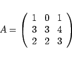
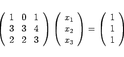
To find the inverse, one sets up an augmented system with A on the
left and I on the right:
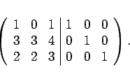
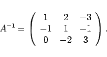
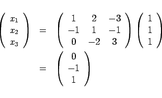
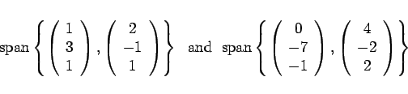
There are several ways to solve this problem, all of which are mathematically equivalent.
On the right, every element in the span can be described as
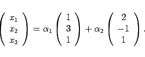
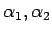
are irrelevant for answering this question. To find the consistency conditions, we row-reduce the system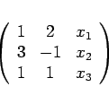
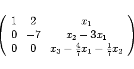
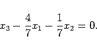
Performing the same procedure on the right, we obtain
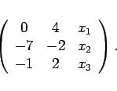
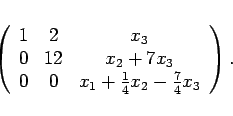
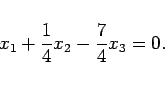
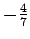
, we have the exact same equation as on the left, so we see that the two spans are the same.
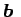
when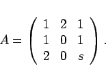
has a solution for all if and only if is invertible. is invertible if and only if
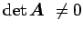
.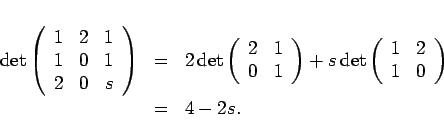
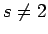
. Note: Even when s=2, there may be (and are) solutions for certain 's, but there are some 's for which there is no solution.
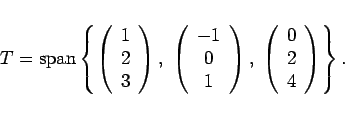
The quick way to get an answer to the first question is to take the determinant of the matrix whose columns are the vectors in the set above. The determinant is zero, so we would know that the vectors are not linearly independent and cannot form a basis.
Now that we know that it is not a basis, we need to figure out which vectors in the set are redundant. We need to know for values of
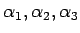
such that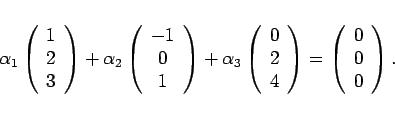
Again, we resort to Gaussian elimination on
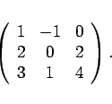
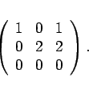
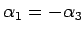
and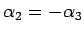
. We have only one free variable;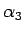
is arbitrary. For instance, if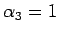
,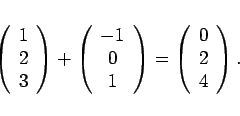
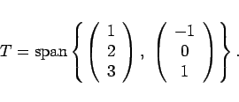
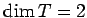
.
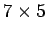
matrix, why can the rank of A not be 6?
The row rank is equivalent to the column rank, and there are only 5 columns, so the maximum rank is 5.
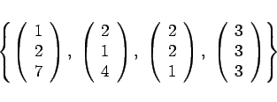
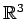
(why)?
No. has three dimensions and so any spanning set should have three vectors in it.
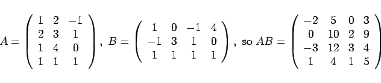
We all know that
BT AT =(AB)T, so
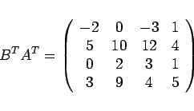
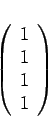
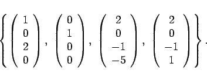
Essentially, you are trying to find
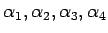
such that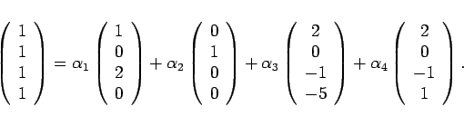
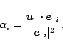
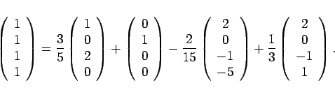